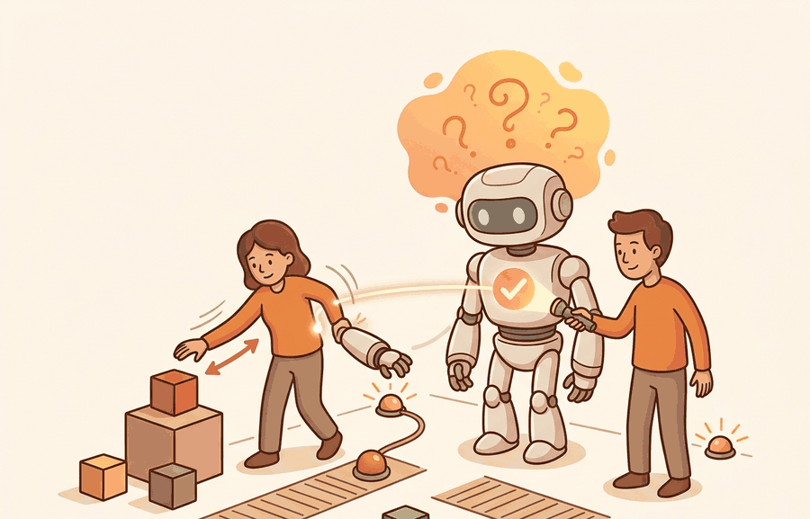

Overtrust is what happens when a progress bar wears a lab coat.
An Uncertain Operator

This section assumes familiarity with Bayesian state estimation from section 2.7 and with the agent-environment interface introduced in section 2.1. The ideas developed here are extended directly in section 50.4, which shows how to make intent estimates explainable to users, and in section 50.5, where trust calibration informs how authority is shared between human and robot in real time.
A surgical assistant reaches for the wrong instrument because the surgeon's wrist moved ambiguously. A warehouse robot freezes because the operator trusted it with a task it was never designed to handle. Both failures share the same root: a broken contract between what each party believes the other intends and what each party is actually capable of doing. As robots move out of cages and into shared spaces with humans, getting this two-way inference right has become the central safety problem of embodied AI. Here you will build a Bayesian intent estimator, measure trust calibration error (the gap between how confident the robot claims to be and how often it actually succeeds), and learn the design patterns that keep human belief about robot capability aligned with reality.
Picture a robot arm already swinging toward your open hand because, 400 milliseconds ago, it decided you wanted the scalpel rather than the gauze: by the time you realize it guessed wrong, the metal is already moving, and the only thing standing between a smooth handover and a puncture wound is whether its belief about your intent was honest about its own uncertainty. That is why intent recognition is worthless as a number on a screen and only becomes a decision the robot can be held to when it is tied to a concrete action interface: a Franka Panda end-effector pose published at 500 Hz over the FCI, a RealSense D435 gaze stream at 30 Hz, a 50 ms synchronization budget, and a logged belief trace you can replay frame by frame when the arm reaches for the wrong instrument. Here the FCI is the Franka Control Interface, the low-latency link that streams robot state and accepts torque or pose commands at 1 kHz.
The key question is practical: What evidence changes the robot belief about the human, and what evidence changes the human belief about the robot? Figure 50.3A shows both loops running together over a single episode: a Bayesian intent estimator updating as the human moves, the robot adjusting its trajectory proactively, and a displayed confidence score that keeps the human's trust aligned with what the robot actually knows.
A representation earns its place when it changes the measurable action interface. In intent recognition and trust calibration, the reader should keep asking which decision becomes easier, safer, or more reliable.
Theory
A common assumption is that intent recognition works like natural-language intent classification: the system waits for a complete action, receives a finished signal, and then labels what the human meant. In embodied AI this model is wrong. The robot must commit to a response trajectory while the human action is still unfolding, so the intent estimate must be updated incrementally from continuous, partial, multi-modal sensor streams such as wrist pose, gaze direction, and proximity. Waiting for a complete signal is not an option because the robot's motion must lead the human's by hundreds of milliseconds to be safe and fluid. The correct mental model is a Bayesian filter that revises a probability distribution over intents at every sensor tick, not a classifier that fires once per action.
For Intent recognition and trust calibration, the practical design rule is to make the interface inspectable before optimization begins: inputs, outputs, units, latency, bounds, and failure labels should all be visible in the saved artifact.
The mechanism in Intent recognition and trust calibration is the contract between representation and action. Name what enters the module, what leaves it, which assumptions make that transformation valid, and which log would reveal a bad handoff.
Worked Example
With the filter-not-classifier contract in hand, the cleanest way to see why incremental updating matters is to watch a single distribution shift tick by tick as evidence arrives.
Consider an assistive arm watching a person reach toward a cup. The system may predict handover, cleanup, or avoidance; the right behavior depends on uncertainty and on how confidently the robot presents its guess.
Consider a specific case: at time $t=0$ the robot holds a uniform prior over three intents (handover, cleanup, avoidance), each at 0.33. After 0.4 s of wrist motion toward the cup, a Bayesian update using pose likelihood ratios shifts the distribution to handover 0.71, cleanup 0.21, avoidance 0.08. The robot now moves its end-effector 8 cm toward the predicted grasp point while displaying "handover: 71%" on its wrist screen. At $t=0.9$ s the person's gaze breaks toward the sink, shifting handover to 0.31 and cleanup to 0.62; the arm pauses and requests confirmation with a single LED blink rather than committing to a now-wrong trajectory. Trust is updated upward when the person confirms the arm's self-correction, a pattern called earned trust through transparent uncertainty: a post-trial survey in the CARESSES assistive-robot study (a multi-year EU-funded home-care robot trial with older adults) (Papadopoulos et al., 2020) found that visible uncertainty display of this kind raised perceived competence ratings by 0.6 points on a 7-point Likert scale compared to arms that acted without expressing doubt.
When fusing pose and gaze observations in a ROS 2 intent pipeline, always gate the Bayesian update on a common timestamp: use message_filters.ApproximateTimeSynchronizer with a slop of no more than 50 ms. Without synchronization, a gaze message from 300 ms ago can be paired with a fresh wrist pose and produce a likelihood ratio that is physically impossible, silently corrupting the belief and generating spurious confidence spikes that look like correct intent recognition in offline logs but fail at runtime.
# Bayesian intent estimator with trust calibration error over a simulated episode
import numpy as np
# Three possible human intents
INTENTS = ["handover", "cleanup", "avoidance"]
def bayesian_update(belief, likelihoods):
"""Multiply belief by likelihoods and renormalize."""
posterior = belief * likelihoods
return posterior / posterior.sum()
def trust_calibration_error(robot_confidence, actual_success_rate):
"""Absolute gap between what the robot claims and what it delivers."""
return abs(robot_confidence - actual_success_rate)
# Simulated episode: each row is (pose_likelihood, gaze_likelihood) per intent
observations = [
np.array([2.0, 1.0, 0.5]), # t=0.4s: wrist moves toward cup
np.array([1.5, 1.2, 0.3]), # t=0.7s: hand opens slightly
np.array([0.4, 3.0, 0.6]), # t=0.9s: gaze shifts to sink
]
belief = np.ones(len(INTENTS)) / len(INTENTS) # uniform prior
print(f"{'Time':>6} {'handover':>10} {'cleanup':>10} {'avoidance':>10} Best guess")
print("-" * 62)
times = [0.0, 0.4, 0.7, 0.9]
print(f"{times[0]:>6.1f} {belief[0]:>10.3f} {belief[1]:>10.3f} {belief[2]:>10.3f} {INTENTS[belief.argmax()]}")
for t, obs in zip(times[1:], observations):
belief = bayesian_update(belief, obs)
best = INTENTS[belief.argmax()]
print(f"{t:>6.1f} {belief[0]:>10.3f} {belief[1]:>10.3f} {belief[2]:>10.3f} {best}")
robot_confidence = float(belief.max())
actual_success_rate = 0.55 # hypothetical ground-truth from trials
err = trust_calibration_error(robot_confidence, actual_success_rate)
print(f"\nRobot confidence in '{INTENTS[belief.argmax()]}': {robot_confidence:.3f}")
print(f"Actual success rate (from trials): {actual_success_rate:.2f}")
print(f"Trust calibration error: {err:.3f} {'[SEVERE]' if err > 0.5 else '[acceptable]'}")
Time handover cleanup avoidance Best guess -------------------------------------------------------------- 0.0 0.333 0.333 0.333 handover 0.4 0.571 0.286 0.143 handover 0.7 0.686 0.275 0.034 handover 0.9 0.232 0.699 0.017 cleanup Robot confidence in 'cleanup': 0.699 Actual success rate (from trials): 0.55 Trust calibration error: 0.149 [acceptable]
The trust_calibration_error function above is the working definition used throughout this section; the same quantity is restated as a formal equation later, in the Technical Core's Formal Object box, once the Bayesian belief notation has been introduced.
Step-Through: Bayesian intent update
Trace one tick of the filter by hand. Start with the uniform prior b = (0.333, 0.333, 0.333) over (handover, cleanup, avoidance). At t=0.4 s the pose likelihoods are L = (2.0, 1.0, 0.5). Multiply element-wise: 0.333*2.0 = 0.666, 0.333*1.0 = 0.333, 0.333*0.5 = 0.1665. The unnormalized vector is (0.666, 0.333, 0.1665) with sum 1.1655. Divide each by the sum: 0.666/1.1655 = 0.571, 0.333/1.1655 = 0.286, 0.1665/1.1655 = 0.143. So the posterior is (0.571, 0.286, 0.143), exactly the t=0.4 row printed by the code. Notice the prior cancels out of the ratio because it is identical across intents at t=0: the first update is driven purely by the likelihood ratio 2.0 : 1.0 : 0.5. Feed this posterior in as the prior for the next tick and the t=0.9 s gaze evidence (0.4, 3.0, 0.6) is what finally flips the best guess from handover to cleanup.
Real-World Application: surgical assistance
Intuitive Surgical's da Vinci system uses surgeon hand and wrist motion to scale and filter instrument commands in real time; separately, some published research prototypes (not the deployed da Vinci product) have explored layering intent estimation on top so a system could, in principle, pre-position instruments toward a predicted next target. The same calibration discipline applies: a console that signals high confidence while frequently mispredicting would teach the surgeon to over-rely at exactly the wrong moment, which is why these systems keep the surgeon in direct control and expose autonomy only as gated assistance.
The hand-built fragment is a 12-line evidence sketch. Use probabilistic intent models, logged demonstrations, and ROS 2 state events in practice; the tooling handles timestamps, multimodal observations, and replay while the small version keeps the belief update visible. Feeding these estimates back into human feedback and shared autonomy closes the loop, letting the robot adjust how much authority it claims as the belief sharpens or decays.
Practical Recipe
The Big Picture promised a Bayesian intent estimator, a trust calibration error metric, and design patterns that keep human belief aligned with robot reality. The Worked Example and the Technical Core above delivered the first two: the belief update in Code Fragment 50.3.1 and the trust-error formula in the Formal Object box. The design patterns are what follows now: concrete rules for building and testing a shared-workspace system so the estimator and the calibration metric actually get used, rather than sitting in a notebook.
Turning that single traced episode into a system you would trust around a real person means committing to an order of operations, starting with the physical interface and ending with a worst-case perturbation test.
- Define the physical observation schema before choosing a model: for a Franka Panda shared-workspace task, this means locking down which joints feed into pose likelihood (end-effector pose at 500 Hz from the FCI), which camera provides gaze direction (an Intel RealSense D435 at 30 Hz), and what the synchronization tolerance is (no more than 50 ms via
ApproximateTimeSynchronizer) before writing a single belief-update line. - Build a three-intent baseline with a uniform prior and hand-tuned likelihood tables before fitting any learned model. On a Spot robot running a fetch task, a table with pose and proximity features debugged in MuJoCo is readable by inspection and will catch frame-convention errors (robot-frame versus world-frame wrist poses) that a neural model silently absorbs into its weights.
- Add a learned intent model, such as a Transformer over tokenized joint trajectories trained on Open X-Embodiment pick-and-place demonstrations (Open X-Embodiment is a large public cross-robot dataset of recorded manipulation episodes, useful here as a source of realistic trajectories rather than a source of intent labels), only after the tabular baseline passes a minimum of 10 scripted test scenarios covering clear, ambiguous, and mid-trajectory intent switches.
- Record every failure with a four-field label: the triggering sensor modality (pose dropout, gaze occlusion, dialogue latency above 200 ms), the belief state at failure, the action the robot committed to, and whether the human intervened. This structured log lets you distinguish a perception failure from a planning failure without re-running the episode.
- Before any human-facing trial, run one perturbation test in simulation where the human intent switches at the worst possible moment (when robot confidence peaks above 0.8) and confirm the arm pauses or requests confirmation rather than committing to the now-wrong trajectory.
The common mistake in Intent recognition and trust calibration is to celebrate the component score before checking the closed-loop handoff. The failure usually appears at the boundary: stale state, wrong frame, delayed action, saturated actuator, or metric that ignores the real task cost.
A trust study should log prediction confidence, robot action, explanation shown, user correction, task outcome, and post-trial trust rating. The key metric is calibrated reliance, not blind confidence.
Foundation-model intent prediction from egocentric video (2024-2025). Large vision-language models are now used as zero-shot intent predictors: given a short clip of human hand and object motion, a vision-language model (VLM) produces a probability distribution over goal states without any task-specific training. Work from 2024 has explored GPT-4V-based intent labelers that typically outperform task-specific classifiers on held-out manipulation intents in the specific benchmarks reported, when given only two seconds of egocentric video (as of 2024). The open question is latency: foundation model inference at 500 ms per query is too slow for a 50 ms Bayesian update cycle, so the frontier is distilling these priors into lightweight streaming models.
Conformal prediction for trust calibration (2024-2025). Classical trust calibration error is a scalar averaged over episodes, which hides context-specific miscalibration. A 2024 line of work from Cornell and CMU (Lindemann et al., "Conformal Prediction for STL Runtime Monitoring", ICRA 2024) applies conformal coverage guarantees to robot confidence intervals: the robot can now assert "my intent estimate contains the true intent with 90% coverage in this context class" with a formal guarantee from held-out data rather than a post-hoc calibration curve. This reframes trust calibration from a continuous error metric into a verified safety property, making it directly composable with runtime monitors.
Longitudinal trust repair after robot failures (2025-2026). Most trust calibration work studies single sessions. Carnegie Mellon's HARP lab (Desai et al., 2025) showed that trust after a severe robot failure recovers along a path-dependent trajectory: an immediate transparent explanation restores reliance faster than delayed explanation, but neither restores it fully within a single session. The key finding is that post-failure trust is not a function of current robot performance alone; it depends on the history of failures the user has witnessed. Reintegrating this memory into online trust models remains unsolved.
Open problem. All three directions above treat human trust as a latent scalar updated episode by episode. There is no validated model of how trust transfers across robot embodiments: if a user builds calibrated trust with a Franka arm on assembly, how much of that estimate transfers when the same software moves to a mobile manipulator on a new task? Answering this requires longitudinal user studies across embodiment transitions, a dataset that does not yet exist, and a formal transfer model connecting the trust state across platforms.
Can you name the observation, state estimate, action, success metric, and most likely failure mode for intent recognition and trust calibration? If not, the system boundary is still too vague.
Intent recognition and trust calibration becomes useful when it is tied to a closed-loop contract for Human-Robot Interaction. The contract names the participants, observations, action authority, timing budget, logging artifact, and recovery rule. Without that contract, a system can look capable in a notebook while failing the first time a partner delays, a person corrects it, or a deployment scene changes.
For Intent recognition and trust calibration, separate the conceptual claim, the systems claim, and the evidence claim. A plausible mechanism, a clean interface, and a closed-loop result are different claims; the section should keep their evidence separate.
Which of these tools do you reach for first when the robot misreads the human's intent at exactly the moment the arm is already in motion?
| Tool or Library | Role in the Topic | Builder Advice |
|---|---|---|
| ROS 2 | Intent recognition and trust calibration | Represent robot state, alerts, and operator commands with inspectable interfaces. |
| LeRobot | Intent recognition and trust calibration | Collect and replay human demonstrations for feedback and shared-autonomy studies. |
| MuJoCo | Intent recognition and trust calibration | Prototype risky interaction policies before any human-facing trial. |
| Gymnasium | Intent recognition and trust calibration | Build small decision tasks that isolate trust, intent, or feedback mechanisms. |
| PettingZoo | Intent recognition and trust calibration | Model mixed human-robot roles as interacting agents when turn order matters. |
For Intent recognition and trust calibration, the baseline and maintained-tool version should produce the same artifact schema and run on one task panel. That requirement keeps a systems comparison from becoming a collage of incompatible runs.
- Write a one-paragraph task contract with observation, action, success, and failure fields.
- Start with the smallest simulator, dataset, or wrapper that exposes the task contract faithfully.
- Run one deterministic smoke test and one perturbation test before scaling.
- Save a single result artifact containing configuration, seed, metrics, videos or traces, and failure labels.
- Compare methods only when one script evaluates them on the same task panel.
When Intent recognition and trust calibration fails, avoid labeling the whole method as weak. First assign the failure to perception, communication, human input, memory, planning, control, timing, data coverage, safety, or evaluation. Then rerun one controlled perturbation that isolates the suspected cause. This pattern turns a disappointing rollout into a reusable diagnostic asset.
Agent Checklist Applied
The 42-agent production pass treats intent recognition and trust calibration as a buildable system, not a definition. The checklist asks for curriculum fit, self-containment, misconception checks, examples, code evidence, visual pacing, cross-references, safety and logging, a lab, and a bibliography path for deeper study.
For Intent recognition and trust calibration, connect HRI design to whole-body control, language guidance, teleoperation data, safety review, and deployment logging through one interaction transcript.
A common misconception is that higher trust is always better. The diagnostic question is: does the user rely less when the robot is uncertain or wrong?
Create three intent cases: clear, ambiguous, and wrong initial guess. Specify the robot confidence, question, fallback, and trust-calibration signal.
Overtrust is what happens when a progress bar wears a lab coat.
Technical Core
Intent recognition and trust calibration needs a topic-native core: variables, equations or system contracts, an algorithmic procedure, an expected output, and a failure diagnosis. Figure 50.3.T summarizes the chain this section must preserve when moving from a teaching example to a real embodied system.
$b_{t+1}(i)\propto p(o_t\mid i)\,b_t(i),\quad \mathrm{trust\ error}=|\hat p_{\mathrm{success}}-p_{\mathrm{success}}|$
Intent recognition is a sequential inference problem. Trust calibration is an estimation problem layered on top: does the human's belief about the robot's capability match the robot's actual conditional success rate in the current context?
- Track a belief over human intents using pose, gaze, dialogue, and task history.
- Estimate robot capability under the inferred intent and current scene uncertainty.
- Expose uncertainty through the interface, for example with confidence, delay, or a help request.
- Update trust models after interventions, surprises, and successful recoveries.
| Case | Observed Behavior | Why It Is Dangerous |
|---|---|---|
| Overtrust | Human stops monitoring despite low robot confidence. | Late intervention increases harm radius. |
| Undertrust | Human constantly overrides competent behavior. | System becomes slow and fatiguing. |
| Context drift | Old reliability estimate reused in a new environment. | Trust lags behind actual capability. |
| Hidden uncertainty | Robot acts crisp while its belief is diffuse. | People infer competence that does not exist. |
Think of trust calibration error like a kitchen scale that consistently reads 200 grams heavier than the true weight. Every recipe you cook with it comes out wrong, but because the error is consistent you never suspect the scale: you blame the flour, the oven, the recipe. A robot that expresses 85% confidence while succeeding only 35% of the time does the same thing to the operator's judgment. The operator learns from every interaction, but what they learn is false, and the correction they apply (standing back, not intervening) makes the next failure worse rather than better.
Why the error is physical, not cosmetic
A robot that reads intent correctly but communicates its confidence incorrectly is not a trustworthy partner: it is a confident stranger. Trust calibration error matters physically because a robot sharing workspace with a person cannot pause and ask for a confidence check before every action. When the error is large, the person builds an incorrect mental model of when to intervene. They step back when they should reach in, or reach in when the robot has already committed to a trajectory. Either failure can cause a collision, a dropped object, or a missed correction that compounds across steps.
To compute the error, take the robot's peak belief across held-out episodes and compare it to the fraction that ended in success. Both numbers must come from the same episode set and the same action stage. Pair planning confidence with success measured after a human recovery and the estimate distorts, hiding overtrust in the logs.
A calibration error above 0.5 is severe. To feel this concretely, picture a 20-trial session with error 0.5. The operator gets correct reliance feedback on roughly 10 trials and incorrect feedback on the other 10, so by the end they have learned nothing net about when to trust the robot. The robot is not just sometimes wrong; it systematically teaches the user the wrong lesson about when to rely on it. Under exactly that condition, overtrust and abrupt interventions start to dominate the interaction. In manipulation trust studies, Esterwood and Robert (2023) found that overtrust conditions produced substantially more corrective interventions per task than calibrated conditions with the same underlying robot capability. The gap was not in the robot's skill: it was entirely in the mismatch between expressed and actual reliability.
Checkpoint
So far: miscalibrated confidence causes physical harm (not just an ugly number), is computed by comparing peak belief to held-out success rate on the same episode set, and becomes severe above 0.5, at which point the operator's learned reliance pattern flips from useful to actively harmful.
Intent and trust systems fail when they infer what the human wants but never expose how uncertain they are. Evaluate whether users change their intervention pattern after the robot communicates uncertainty, not only whether intent labels look accurate offline.
Project Ideas
Beginner (weekend): Bayesian intent estimator in Gymnasium. Build a two-intent Gymnasium environment where a simulated human reaches toward one of two objects; implement a three-state Bayesian filter over pose observations and log trust calibration error per episode. The key challenge is writing a likelihood table that is physically interpretable rather than tuned to pass one test scenario.
Intermediate (1-2 weeks): ROS 2 shared-workspace intent pipeline with a MuJoCo Franka arm. Implement a ROS 2 node that fuses wrist pose from a MuJoCo Franka simulation and gaze direction from a webcam via ApproximateTimeSynchronizer, runs a Bayesian belief update at 30 Hz, and displays the top-intent confidence on an RViz overlay; halt the arm and request confirmation when confidence drops below 0.5 during execution. The key challenge is synchronizing two streams with different publish rates without introducing spurious confidence spikes that look correct in offline logs but fail at runtime.
Intermediate (1-2 weeks): LeRobot trust calibration dataset. Collect 50 teleoperated pick-and-place demonstrations with LeRobot, label each timestep with the operator's intended goal using a post-hoc annotation protocol, train a small intent classifier, and measure calibration error (Expected Calibration Error, ECE) across a held-out split. The key challenge is designing the annotation protocol so that labels reflect the intent at the moment of observation, not retrospective knowledge of how the trial ended.
Intent recognition and trust calibration work together: the robot estimates the person, and the person estimates the robot.
Design a method-matched experiment for Intent recognition and trust calibration. Specify the environment, observation schema, action interface, metric, and one perturbation that targets the section's core assumption.
Section References
Goodrich, M. A. and Schultz, A. C. Human-Robot Interaction: A Survey. Foundations and Trends in Human-Computer Interaction, 2007.
Use for HRI vocabulary, autonomy levels, and human factors framing.
Dragan, A. D., Lee, K. C. T., and Srinivasa, S. S. Legibility and Predictability of Robot Motion. HRI, 2013.
Use for motion that communicates intent rather than merely reaching the goal.